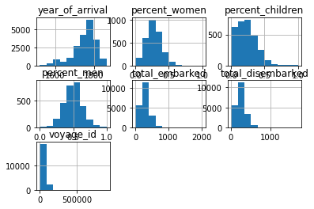
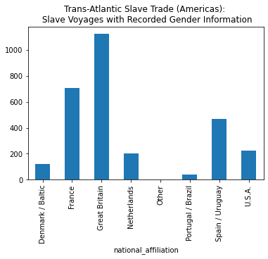
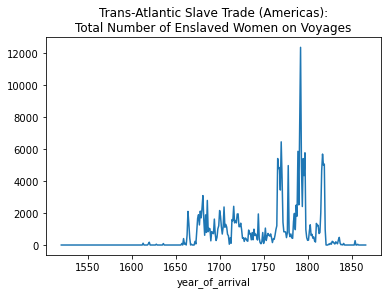
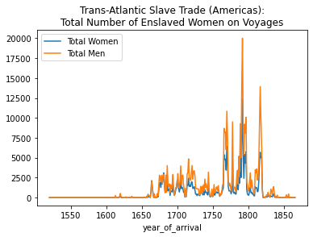

import pandas as pd19 Pandas Basics Part 2 — Workbook
In this lesson, we’re going to introduce some more fundamentals of Pandas, a powerful Python library for working with tabular data like CSV files.
19.1 The Trans-Atlantic Slave Trade Database
“[D]isplaying data alone could not and did not offer the atonement descendants of slaves sought or capture the inhumanity of this archive’s formation.”
— Jessica Marie Johnson, “Markup Bodies”
The dataset that we’re going to be working with in this lesson is taken from The Trans-Atlantic Slave Trade Database, part of the Slave Voyages project. The larger database includes information about 35,000 slave-trading voyages from 1514-1866. The dataset we’re working with here was filtered to include the 20,000 voyages that landed in the Americas. The data was filtered to also include the percentage of enslaved men, women, and children on the voyages.
data = [['Avatar', 'Neytiri', 2000, 2800], ['Avatar', 'Jake', 500, 2800], ['The Avengers', 'Loki', 700, 1518],['The Avengers', 'Thor', 800, 1518], ['My College Short Film', 'Myself', 100], ['My College Short Film', 'My Mom', 900]]
df = pd.DataFrame(data, columns = ['Film', 'Character', 'Words Spoken','Box Office Gross (Millions)']) df| Film | Character | Words Spoken | Box Office Gross (Millions) | |
|---|---|---|---|---|
| 0 | Avatar | Neytiri | 2000 | 2800.0 |
| 1 | Avatar | Jake | 500 | 2800.0 |
| 2 | The Avengers | Loki | 700 | 1518.0 |
| 3 | The Avengers | Thor | 800 | 1518.0 |
| 4 | My College Short Film | Myself | 100 | NaN |
| 5 | My College Short Film | My Mom | 900 | NaN |
df.groupby('Film').sum()| Words Spoken | Box Office Gross (Millions) | |
|---|---|---|
| Film | ||
| Avatar | 2500 | 5600.0 |
| My College Short Film | 1000 | 0.0 |
| The Avengers | 1500 | 3036.0 |
df.groupby('Film')['Words Spoken'].mean()Film
Avatar 1250.0
My College Short Film 500.0
The Avengers 750.0
Name: Words Spoken, dtype: float64df.groupby('Film').count()| Character | Words Spoken | Box Office Gross (Millions) | |
|---|---|---|---|
| Film | |||
| Avatar | 2 | 2 | 2 |
| My College Short Film | 2 | 2 | 0 |
| The Avengers | 2 | 2 | 2 |
19.2 Import Pandas
19.3 Change Display Settings
By default, Pandas will display 60 rows and 20 columns. I often change Pandas’ default display settings to show more rows or columns.
pd.options.display.max_rows = 20019.4 Get Data
slave_voyages_df = pd.read_csv('../data/Trans-Atlantic-Slave-Trade_Americas.csv', delimiter=",", encoding='utf-8')slave_voyages_df| year_of_arrival | flag | place_of_purchase | place_of_landing | percent_women | percent_children | percent_men | total_embarked | total_disembarked | resistance_label | vessel_name | captain's_name | voyage_id | sources | |
|---|---|---|---|---|---|---|---|---|---|---|---|---|---|---|
| 0 | 1520 | NaN | Portuguese Guinea | San Juan | NaN | NaN | NaN | 324.0 | 259.0 | NaN | NaN | 42987 | [u'AGI,Patronato 175, r.9<><p><em>AG!</em> (Se... | |
| 1 | 1525 | Portugal / Brazil | Sao Tome | Hispaniola, unspecified | NaN | NaN | NaN | 359.0 | 287.0 | NaN | S Maria de Bogoña | Monteiro, Pero | 46473 | [u'ANTT,CC,Parte II, maco 131, doc 54<><i>Inst... |
| 2 | 1526 | Spain / Uruguay | Cape Verde Islands | Cuba, port unspecified | NaN | NaN | NaN | 359.0 | 287.0 | NaN | Carega, Esteban (?) | 11297 | [u'Pike,60-1,172<>Pike, Ruth, <i>Enterprise</i... | |
| 3 | 1526 | Spain / Uruguay | Cape Verde Islands | Cuba, port unspecified | NaN | NaN | NaN | 359.0 | 287.0 | NaN | Carega, Esteban (?) | 11298 | [u'Pike,60-1,172<>Pike, Ruth, <i>Enterprise</i... | |
| 4 | 1526 | NaN | Cape Verde Islands | Caribbean (colony unspecified) | NaN | NaN | NaN | 359.0 | 287.0 | NaN | S Anton | Leon, Juan de | 42631 | [u'Chaunus, 3: 162-63<><p>Chaunus, <em>xxxxxx<... |
| ... | ... | ... | ... | ... | ... | ... | ... | ... | ... | ... | ... | ... | ... | ... |
| 20736 | 1864 | Spain / Uruguay | Africa., port unspecified | Cuba, port unspecified | NaN | NaN | NaN | 488.0 | 465.0 | NaN | Polaca | NaN | 46554 | [u'AHNM, Ultramar, Leg. 3551, 6<><i>Archivo Hi... |
| 20737 | 1865 | Spain / Uruguay | Africa., port unspecified | Isla de Pinas | NaN | NaN | NaN | 152.0 | 145.0 | Slave insurrection | Gato | NaN | 4394 | [u'IUP,ST,50/B/137<>Great Britain, <i>Irish Un... |
| 20738 | 1865 | NaN | Africa., port unspecified | Mariel | NaN | NaN | NaN | 780.0 | 650.0 | NaN | NaN | 4395 | [u'IUP,ST,50/B/144<>Great Britain, <i>Irish Un... | |
| 20739 | 1865 | NaN | Congo River | Cuba, port unspecified | NaN | NaN | NaN | 1265.0 | 1004.0 | NaN | Cicerón | Mesquita | 5052 | [u'IUP,ST,50/A/23-4<>Great Britain, <i>Irish U... |
| 20740 | 1866 | NaN | Africa., port unspecified | Cuba, port unspecified | NaN | NaN | NaN | 851.0 | 700.0 | NaN | NaN | 4998 | [u'IUP,ST,50/B/220<>Great Britain, <i>Irish Un... |
20741 rows × 14 columns
This creates a Pandas DataFrame object — often abbreviated as df, e.g., slave_voyages_df. A DataFrame looks and acts a lot like a spreadsheet. But it has special powers and functions that we will discuss in the next few lessons.
19.5 Overview
To look at the first n rows in a DataFrame, we can use a method called .head().
slave_voyages_df.head(10)| year_of_arrival | flag | place_of_purchase | place_of_landing | percent_women | percent_children | percent_men | total_embarked | total_disembarked | resistance_label | vessel_name | captain's_name | voyage_id | sources | |
|---|---|---|---|---|---|---|---|---|---|---|---|---|---|---|
| 0 | 1520 | NaN | Portuguese Guinea | San Juan | NaN | NaN | NaN | 324.0 | 259.0 | NaN | NaN | 42987 | [u'AGI,Patronato 175, r.9<><p><em>AG!</em> (Se... | |
| 1 | 1525 | Portugal / Brazil | Sao Tome | Hispaniola, unspecified | NaN | NaN | NaN | 359.0 | 287.0 | NaN | S Maria de Bogoña | Monteiro, Pero | 46473 | [u'ANTT,CC,Parte II, maco 131, doc 54<><i>Inst... |
| 2 | 1526 | Spain / Uruguay | Cape Verde Islands | Cuba, port unspecified | NaN | NaN | NaN | 359.0 | 287.0 | NaN | Carega, Esteban (?) | 11297 | [u'Pike,60-1,172<>Pike, Ruth, <i>Enterprise</i... | |
| 3 | 1526 | Spain / Uruguay | Cape Verde Islands | Cuba, port unspecified | NaN | NaN | NaN | 359.0 | 287.0 | NaN | Carega, Esteban (?) | 11298 | [u'Pike,60-1,172<>Pike, Ruth, <i>Enterprise</i... | |
| 4 | 1526 | NaN | Cape Verde Islands | Caribbean (colony unspecified) | NaN | NaN | NaN | 359.0 | 287.0 | NaN | S Anton | Leon, Juan de | 42631 | [u'Chaunus, 3: 162-63<><p>Chaunus, <em>xxxxxx<... |
| 5 | 1526 | NaN | Cape Verde Islands | San Domingo (a) Santo Domingo | NaN | NaN | NaN | 359.0 | 287.0 | NaN | Santa Maria de Guadalupe | Pabon, Francisco | 42679 | [u'Chaunus, 3: 162-63<><p>Chaunus, <em>xxxxxx<... |
| 6 | 1526 | Portugal / Brazil | Sao Tome | Spanish Caribbean, unspecified | NaN | NaN | NaN | 359.0 | 287.0 | NaN | NaN | 46474 | [u'ANTT,CC,Parte II, maco 131, doc 54<><i>Inst... | |
| 7 | 1527 | Spain / Uruguay | Cape Verde Islands | Puerto Rico, port unspecified | NaN | NaN | NaN | 325.0 | 260.0 | NaN | Concepción | Díaz, Alonso | 99027 | [u'SuedBadillo,57,75,76<><p>SuedBadillo, <em>x... |
| 8 | 1532 | Portugal / Brazil | Sao Tome | Spanish Caribbean, unspecified | NaN | NaN | NaN | 359.0 | 287.0 | NaN | S Antônio | Afonso, Martim | 11293 | [u'Ryder,66<>Ryder, A. F. C., <i>Benin</i><i> ... |
| 9 | 1532 | NaN | Cape Verde Islands | San Juan | NaN | NaN | NaN | 25.0 | 20.0 | NaN | de Illanes, Manuel | 28994 | [u'Tanodi, 321-22<>Tanodi, Aurelio, <i>Documen... |
Generate information about all the columns in the data
slave_voyages_df.info()<class 'pandas.core.frame.DataFrame'>
RangeIndex: 20741 entries, 0 to 20740
Data columns (total 14 columns):
# Column Non-Null Count Dtype
--- ------ -------------- -----
0 year_of_arrival 20741 non-null int64
1 flag 19583 non-null object
2 place_of_purchase 20663 non-null object
3 place_of_landing 20741 non-null object
4 percent_women 2894 non-null float64
5 percent_children 2927 non-null float64
6 percent_men 2894 non-null float64
7 total_embarked 20722 non-null float64
8 total_disembarked 20719 non-null float64
9 resistance_label 372 non-null object
10 vessel_name 20741 non-null object
11 captain's_name 19396 non-null object
12 voyage_id 20741 non-null int64
13 sources 20741 non-null object
dtypes: float64(5), int64(2), object(7)
memory usage: 2.2+ MBJust like Python has different data types, Pandas has different data types, too. These data types are automatically assigned to columns when we read in a CSV file. We can check these Pandas data types with the .dtypes method.
| Pandas Data Type | Explanation |
|---|---|
object |
string |
float64 |
float |
int64 |
integer |
datetime64 |
date time |
Make a histogram of the DataFrame
slave_voyages_df.hist()array([[<AxesSubplot:title={'center':'year_of_arrival'}>,
<AxesSubplot:title={'center':'percent_women'}>,
<AxesSubplot:title={'center':'percent_children'}>],
[<AxesSubplot:title={'center':'percent_men'}>,
<AxesSubplot:title={'center':'total_embarked'}>,
<AxesSubplot:title={'center':'total_disembarked'}>],
[<AxesSubplot:title={'center':'voyage_id'}>, <AxesSubplot:>,
<AxesSubplot:>]], dtype=object)
slave_voyages_df.hist(figsize=(10,10))array([[<AxesSubplot:title={'center':'year_of_arrival'}>,
<AxesSubplot:title={'center':'percent_women'}>,
<AxesSubplot:title={'center':'percent_children'}>],
[<AxesSubplot:title={'center':'percent_men'}>,
<AxesSubplot:title={'center':'total_embarked'}>,
<AxesSubplot:title={'center':'total_disembarked'}>],
[<AxesSubplot:title={'center':'voyage_id'}>, <AxesSubplot:>,
<AxesSubplot:>]], dtype=object)
Generate descriptive statistics for all the columns in the data
slave_voyages_df.describe()| year_of_arrival | percent_women | percent_children | percent_men | total_embarked | total_disembarked | voyage_id | |
|---|---|---|---|---|---|---|---|
| count | 20741.000000 | 2894.000000 | 2927.000000 | 2894.000000 | 20722.000000 | 20719.000000 | 20741.000000 |
| mean | 1752.014850 | 0.274198 | 0.231582 | 0.496648 | 295.050381 | 251.573966 | 42783.741671 |
| std | 59.702189 | 0.116513 | 0.149508 | 0.140324 | 147.997690 | 128.050439 | 32401.785320 |
| min | 1520.000000 | 0.000000 | 0.000000 | 0.000000 | 1.000000 | 1.000000 | 112.000000 |
| 25% | 1724.000000 | 0.195265 | 0.115380 | 0.407460 | 194.000000 | 163.000000 | 17862.000000 |
| 50% | 1765.000000 | 0.264110 | 0.215100 | 0.497890 | 282.000000 | 241.000000 | 31916.000000 |
| 75% | 1792.000000 | 0.346150 | 0.321900 | 0.586765 | 368.000000 | 313.000000 | 78283.000000 |
| max | 1866.000000 | 1.000000 | 1.000000 | 1.000000 | 2024.000000 | 1700.000000 | 900206.000000 |
slave_voyages_df.describe(include='all')| year_of_arrival | flag | place_of_purchase | place_of_landing | percent_women | percent_children | percent_men | total_embarked | total_disembarked | resistance_label | vessel_name | captain's_name | voyage_id | sources | |
|---|---|---|---|---|---|---|---|---|---|---|---|---|---|---|
| count | 20741.000000 | 19583 | 20663 | 20741 | 2894.000000 | 2927.000000 | 2894.000000 | 20722.000000 | 20719.000000 | 372 | 20741 | 19396 | 20741.000000 | 20741 |
| unique | NaN | 8 | 156 | 187 | NaN | NaN | NaN | NaN | NaN | 6 | 5849 | 12233 | NaN | 13754 |
| top | NaN | Great Britain | Africa., port unspecified | Barbados, port unspecified | NaN | NaN | NaN | NaN | NaN | Slave insurrection | Smith, John | NaN | [u'mettas,I<>Mettas, Jean, <i>R\xe9pertoire d... | |
| freq | NaN | 10536 | 5999 | 2038 | NaN | NaN | NaN | NaN | NaN | 330 | 712 | 36 | NaN | 1134 |
| mean | 1752.014850 | NaN | NaN | NaN | 0.274198 | 0.231582 | 0.496648 | 295.050381 | 251.573966 | NaN | NaN | NaN | 42783.741671 | NaN |
| std | 59.702189 | NaN | NaN | NaN | 0.116513 | 0.149508 | 0.140324 | 147.997690 | 128.050439 | NaN | NaN | NaN | 32401.785320 | NaN |
| min | 1520.000000 | NaN | NaN | NaN | 0.000000 | 0.000000 | 0.000000 | 1.000000 | 1.000000 | NaN | NaN | NaN | 112.000000 | NaN |
| 25% | 1724.000000 | NaN | NaN | NaN | 0.195265 | 0.115380 | 0.407460 | 194.000000 | 163.000000 | NaN | NaN | NaN | 17862.000000 | NaN |
| 50% | 1765.000000 | NaN | NaN | NaN | 0.264110 | 0.215100 | 0.497890 | 282.000000 | 241.000000 | NaN | NaN | NaN | 31916.000000 | NaN |
| 75% | 1792.000000 | NaN | NaN | NaN | 0.346150 | 0.321900 | 0.586765 | 368.000000 | 313.000000 | NaN | NaN | NaN | 78283.000000 | NaN |
| max | 1866.000000 | NaN | NaN | NaN | 1.000000 | 1.000000 | 1.000000 | 2024.000000 | 1700.000000 | NaN | NaN | NaN | 900206.000000 | NaN |
19.6 Missing Data
“Black digital practice requires researchers to witness and remark on the marked and unmarked bodies, the ones that defy computation, and finds ways to hold the null vlaues up to the light.”
—Jessica Marie Johnson
19.6.1 .isna() / .notna()
Pandas has special ways of dealing with missing data. As you may have already noticed, blank rows in a CSV file show up as NaN in a Pandas DataFrame.
To filter and count the number of missing/not missing values in a dataset, we can use the special .isna() and .notna() methods on a DataFrame or Series object.
slave_voyages_df['percent_women'].notna()0 False
1 False
2 False
3 False
4 False
...
20736 False
20737 False
20738 False
20739 False
20740 False
Name: percent_women, Length: 20741, dtype: boolnot_blank_women = slave_voyages_df['percent_women'].notna()To explicitly count the number of blank rows, we can use the .value_counts() method.
slave_voyages_df['percent_women'].isna().value_counts()True 17847
False 2894
Name: percent_women, dtype: int64To quickly transform these numbers into percentages, we can set the normalize= parameter to True.
slave_voyages_df['percent_women'].isna().value_counts(normalize=True)True 0.86047
False 0.13953
Name: percent_women, dtype: float64Because the .count() method always excludes NaN values, we can also count the number of values in each column and divide by the total number of rows in each column (len()) to find the percentage of not blank data in every column.
slave_voyages_df.count() / len(slave_voyages_df)year_of_arrival 1.000000
flag 0.944169
place_of_purchase 0.996239
place_of_landing 1.000000
percent_women 0.139530
percent_children 0.141121
percent_men 0.139530
total_embarked 0.999084
total_disembarked 0.998939
resistance_label 0.017935
vessel_name 1.000000
captain's_name 0.935153
voyage_id 1.000000
sources 1.000000
dtype: float6419.7 Sort Columns
We can sort a DataFrame with the .sort_values() method, inside of which we include the parameter by= and indicate the name of the column we want to sort by (written in quotation marks).
19.7.1 ❓ Which voyages had the highest percentage of women on board?
slave_voyages_df...SyntaxError: invalid syntax (4198010776.py, line 1)19.8 Calculate Columns
We can do different calculations on columns with built-in Pandas functions. These calculations will ignore NaN values.
| Pandas calculations | Explanation |
|---|---|
.count() |
Number of observations |
.sum() |
Sum of values |
.mean() |
Mean of values |
.median() |
Median of values |
.min() |
Minimum |
.max() |
Maximum |
.mode() |
Mode |
.std() |
Unbiased standard deviation |
19.8.1 ❓ What was the average percentage of women aboard the voyages?
slave_voyages_df| year_of_arrival | flag | place_of_purchase | place_of_landing | percent_women | percent_children | percent_men | total_embarked | total_disembarked | resistance_label | vessel_name | captain's_name | voyage_id | sources | |
|---|---|---|---|---|---|---|---|---|---|---|---|---|---|---|
| 0 | 1520 | NaN | Portuguese Guinea | San Juan | NaN | NaN | NaN | 324.0 | 259.0 | NaN | NaN | 42987 | [u'AGI,Patronato 175, r.9<><p><em>AG!</em> (Se... | |
| 1 | 1525 | Portugal / Brazil | Sao Tome | Hispaniola, unspecified | NaN | NaN | NaN | 359.0 | 287.0 | NaN | S Maria de Bogoña | Monteiro, Pero | 46473 | [u'ANTT,CC,Parte II, maco 131, doc 54<><i>Inst... |
| 2 | 1526 | Spain / Uruguay | Cape Verde Islands | Cuba, port unspecified | NaN | NaN | NaN | 359.0 | 287.0 | NaN | Carega, Esteban (?) | 11297 | [u'Pike,60-1,172<>Pike, Ruth, <i>Enterprise</i... | |
| 3 | 1526 | Spain / Uruguay | Cape Verde Islands | Cuba, port unspecified | NaN | NaN | NaN | 359.0 | 287.0 | NaN | Carega, Esteban (?) | 11298 | [u'Pike,60-1,172<>Pike, Ruth, <i>Enterprise</i... | |
| 4 | 1526 | NaN | Cape Verde Islands | Caribbean (colony unspecified) | NaN | NaN | NaN | 359.0 | 287.0 | NaN | S Anton | Leon, Juan de | 42631 | [u'Chaunus, 3: 162-63<><p>Chaunus, <em>xxxxxx<... |
| ... | ... | ... | ... | ... | ... | ... | ... | ... | ... | ... | ... | ... | ... | ... |
| 20736 | 1864 | Spain / Uruguay | Africa., port unspecified | Cuba, port unspecified | NaN | NaN | NaN | 488.0 | 465.0 | NaN | Polaca | NaN | 46554 | [u'AHNM, Ultramar, Leg. 3551, 6<><i>Archivo Hi... |
| 20737 | 1865 | Spain / Uruguay | Africa., port unspecified | Isla de Pinas | NaN | NaN | NaN | 152.0 | 145.0 | Slave insurrection | Gato | NaN | 4394 | [u'IUP,ST,50/B/137<>Great Britain, <i>Irish Un... |
| 20738 | 1865 | NaN | Africa., port unspecified | Mariel | NaN | NaN | NaN | 780.0 | 650.0 | NaN | NaN | 4395 | [u'IUP,ST,50/B/144<>Great Britain, <i>Irish Un... | |
| 20739 | 1865 | NaN | Congo River | Cuba, port unspecified | NaN | NaN | NaN | 1265.0 | 1004.0 | NaN | Cicerón | Mesquita | 5052 | [u'IUP,ST,50/A/23-4<>Great Britain, <i>Irish U... |
| 20740 | 1866 | NaN | Africa., port unspecified | Cuba, port unspecified | NaN | NaN | NaN | 851.0 | 700.0 | NaN | NaN | 4998 | [u'IUP,ST,50/B/220<>Great Britain, <i>Irish Un... |
20741 rows × 14 columns
19.8.2 ❓ What was the highest percentage of women aboard the voyages?
slave_voyages_df| year_of_arrival | flag | place_of_purchase | place_of_landing | percent_women | percent_children | percent_men | total_embarked | total_disembarked | resistance_label | vessel_name | captain's_name | voyage_id | sources | |
|---|---|---|---|---|---|---|---|---|---|---|---|---|---|---|
| 0 | 1520 | NaN | Portuguese Guinea | San Juan | NaN | NaN | NaN | 324.0 | 259.0 | NaN | NaN | 42987 | [u'AGI,Patronato 175, r.9<><p><em>AG!</em> (Se... | |
| 1 | 1525 | Portugal / Brazil | Sao Tome | Hispaniola, unspecified | NaN | NaN | NaN | 359.0 | 287.0 | NaN | S Maria de Bogoña | Monteiro, Pero | 46473 | [u'ANTT,CC,Parte II, maco 131, doc 54<><i>Inst... |
| 2 | 1526 | Spain / Uruguay | Cape Verde Islands | Cuba, port unspecified | NaN | NaN | NaN | 359.0 | 287.0 | NaN | Carega, Esteban (?) | 11297 | [u'Pike,60-1,172<>Pike, Ruth, <i>Enterprise</i... | |
| 3 | 1526 | Spain / Uruguay | Cape Verde Islands | Cuba, port unspecified | NaN | NaN | NaN | 359.0 | 287.0 | NaN | Carega, Esteban (?) | 11298 | [u'Pike,60-1,172<>Pike, Ruth, <i>Enterprise</i... | |
| 4 | 1526 | NaN | Cape Verde Islands | Caribbean (colony unspecified) | NaN | NaN | NaN | 359.0 | 287.0 | NaN | S Anton | Leon, Juan de | 42631 | [u'Chaunus, 3: 162-63<><p>Chaunus, <em>xxxxxx<... |
| ... | ... | ... | ... | ... | ... | ... | ... | ... | ... | ... | ... | ... | ... | ... |
| 20736 | 1864 | Spain / Uruguay | Africa., port unspecified | Cuba, port unspecified | NaN | NaN | NaN | 488.0 | 465.0 | NaN | Polaca | NaN | 46554 | [u'AHNM, Ultramar, Leg. 3551, 6<><i>Archivo Hi... |
| 20737 | 1865 | Spain / Uruguay | Africa., port unspecified | Isla de Pinas | NaN | NaN | NaN | 152.0 | 145.0 | Slave insurrection | Gato | NaN | 4394 | [u'IUP,ST,50/B/137<>Great Britain, <i>Irish Un... |
| 20738 | 1865 | NaN | Africa., port unspecified | Mariel | NaN | NaN | NaN | 780.0 | 650.0 | NaN | NaN | 4395 | [u'IUP,ST,50/B/144<>Great Britain, <i>Irish Un... | |
| 20739 | 1865 | NaN | Congo River | Cuba, port unspecified | NaN | NaN | NaN | 1265.0 | 1004.0 | NaN | Cicerón | Mesquita | 5052 | [u'IUP,ST,50/A/23-4<>Great Britain, <i>Irish U... |
| 20740 | 1866 | NaN | Africa., port unspecified | Cuba, port unspecified | NaN | NaN | NaN | 851.0 | 700.0 | NaN | NaN | 4998 | [u'IUP,ST,50/B/220<>Great Britain, <i>Irish Un... |
20741 rows × 14 columns
19.8.3 ❓ What was the average percentage of children aboard the voyages?
slave_voyages_df| year_of_arrival | flag | place_of_purchase | place_of_landing | percent_women | percent_children | percent_men | total_embarked | total_disembarked | resistance_label | vessel_name | captain's_name | voyage_id | sources | |
|---|---|---|---|---|---|---|---|---|---|---|---|---|---|---|
| 0 | 1520 | NaN | Portuguese Guinea | San Juan | NaN | NaN | NaN | 324.0 | 259.0 | NaN | NaN | 42987 | [u'AGI,Patronato 175, r.9<><p><em>AG!</em> (Se... | |
| 1 | 1525 | Portugal / Brazil | Sao Tome | Hispaniola, unspecified | NaN | NaN | NaN | 359.0 | 287.0 | NaN | S Maria de Bogoña | Monteiro, Pero | 46473 | [u'ANTT,CC,Parte II, maco 131, doc 54<><i>Inst... |
| 2 | 1526 | Spain / Uruguay | Cape Verde Islands | Cuba, port unspecified | NaN | NaN | NaN | 359.0 | 287.0 | NaN | Carega, Esteban (?) | 11297 | [u'Pike,60-1,172<>Pike, Ruth, <i>Enterprise</i... | |
| 3 | 1526 | Spain / Uruguay | Cape Verde Islands | Cuba, port unspecified | NaN | NaN | NaN | 359.0 | 287.0 | NaN | Carega, Esteban (?) | 11298 | [u'Pike,60-1,172<>Pike, Ruth, <i>Enterprise</i... | |
| 4 | 1526 | NaN | Cape Verde Islands | Caribbean (colony unspecified) | NaN | NaN | NaN | 359.0 | 287.0 | NaN | S Anton | Leon, Juan de | 42631 | [u'Chaunus, 3: 162-63<><p>Chaunus, <em>xxxxxx<... |
| ... | ... | ... | ... | ... | ... | ... | ... | ... | ... | ... | ... | ... | ... | ... |
| 20736 | 1864 | Spain / Uruguay | Africa., port unspecified | Cuba, port unspecified | NaN | NaN | NaN | 488.0 | 465.0 | NaN | Polaca | NaN | 46554 | [u'AHNM, Ultramar, Leg. 3551, 6<><i>Archivo Hi... |
| 20737 | 1865 | Spain / Uruguay | Africa., port unspecified | Isla de Pinas | NaN | NaN | NaN | 152.0 | 145.0 | Slave insurrection | Gato | NaN | 4394 | [u'IUP,ST,50/B/137<>Great Britain, <i>Irish Un... |
| 20738 | 1865 | NaN | Africa., port unspecified | Mariel | NaN | NaN | NaN | 780.0 | 650.0 | NaN | NaN | 4395 | [u'IUP,ST,50/B/144<>Great Britain, <i>Irish Un... | |
| 20739 | 1865 | NaN | Congo River | Cuba, port unspecified | NaN | NaN | NaN | 1265.0 | 1004.0 | NaN | Cicerón | Mesquita | 5052 | [u'IUP,ST,50/A/23-4<>Great Britain, <i>Irish U... |
| 20740 | 1866 | NaN | Africa., port unspecified | Cuba, port unspecified | NaN | NaN | NaN | 851.0 | 700.0 | NaN | NaN | 4998 | [u'IUP,ST,50/B/220<>Great Britain, <i>Irish Un... |
20741 rows × 14 columns
19.8.4 ❓ What was the highest percentage of children aboard the voyages?
slave_voyages_df| year_of_arrival | flag | place_of_purchase | place_of_landing | percent_women | percent_children | percent_men | total_embarked | total_disembarked | resistance_label | vessel_name | captain's_name | voyage_id | sources | |
|---|---|---|---|---|---|---|---|---|---|---|---|---|---|---|
| 0 | 1520 | NaN | Portuguese Guinea | San Juan | NaN | NaN | NaN | 324.0 | 259.0 | NaN | NaN | 42987 | [u'AGI,Patronato 175, r.9<><p><em>AG!</em> (Se... | |
| 1 | 1525 | Portugal / Brazil | Sao Tome | Hispaniola, unspecified | NaN | NaN | NaN | 359.0 | 287.0 | NaN | S Maria de Bogoña | Monteiro, Pero | 46473 | [u'ANTT,CC,Parte II, maco 131, doc 54<><i>Inst... |
| 2 | 1526 | Spain / Uruguay | Cape Verde Islands | Cuba, port unspecified | NaN | NaN | NaN | 359.0 | 287.0 | NaN | Carega, Esteban (?) | 11297 | [u'Pike,60-1,172<>Pike, Ruth, <i>Enterprise</i... | |
| 3 | 1526 | Spain / Uruguay | Cape Verde Islands | Cuba, port unspecified | NaN | NaN | NaN | 359.0 | 287.0 | NaN | Carega, Esteban (?) | 11298 | [u'Pike,60-1,172<>Pike, Ruth, <i>Enterprise</i... | |
| 4 | 1526 | NaN | Cape Verde Islands | Caribbean (colony unspecified) | NaN | NaN | NaN | 359.0 | 287.0 | NaN | S Anton | Leon, Juan de | 42631 | [u'Chaunus, 3: 162-63<><p>Chaunus, <em>xxxxxx<... |
| ... | ... | ... | ... | ... | ... | ... | ... | ... | ... | ... | ... | ... | ... | ... |
| 20736 | 1864 | Spain / Uruguay | Africa., port unspecified | Cuba, port unspecified | NaN | NaN | NaN | 488.0 | 465.0 | NaN | Polaca | NaN | 46554 | [u'AHNM, Ultramar, Leg. 3551, 6<><i>Archivo Hi... |
| 20737 | 1865 | Spain / Uruguay | Africa., port unspecified | Isla de Pinas | NaN | NaN | NaN | 152.0 | 145.0 | Slave insurrection | Gato | NaN | 4394 | [u'IUP,ST,50/B/137<>Great Britain, <i>Irish Un... |
| 20738 | 1865 | NaN | Africa., port unspecified | Mariel | NaN | NaN | NaN | 780.0 | 650.0 | NaN | NaN | 4395 | [u'IUP,ST,50/B/144<>Great Britain, <i>Irish Un... | |
| 20739 | 1865 | NaN | Congo River | Cuba, port unspecified | NaN | NaN | NaN | 1265.0 | 1004.0 | NaN | Cicerón | Mesquita | 5052 | [u'IUP,ST,50/A/23-4<>Great Britain, <i>Irish U... |
| 20740 | 1866 | NaN | Africa., port unspecified | Cuba, port unspecified | NaN | NaN | NaN | 851.0 | 700.0 | NaN | NaN | 4998 | [u'IUP,ST,50/B/220<>Great Britain, <i>Irish Un... |
20741 rows × 14 columns
19.9 Rename Columns
We can rename columns with the .rename() method and the columns= parameter. For example, we can rename the “flag” column “national_affiliation.”
slave_voyages_df.rename(columns={'flag': 'national_affiliation'})| year_of_arrival | national_affiliation | place_of_purchase | place_of_landing | percent_women | percent_children | percent_men | total_embarked | total_disembarked | resistance_label | vessel_name | captain's_name | voyage_id | sources | |
|---|---|---|---|---|---|---|---|---|---|---|---|---|---|---|
| 0 | 1520 | NaN | Portuguese Guinea | San Juan | NaN | NaN | NaN | 324.0 | 259.0 | NaN | NaN | 42987 | [u'AGI,Patronato 175, r.9<><p><em>AG!</em> (Se... | |
| 1 | 1525 | Portugal / Brazil | Sao Tome | Hispaniola, unspecified | NaN | NaN | NaN | 359.0 | 287.0 | NaN | S Maria de Bogoña | Monteiro, Pero | 46473 | [u'ANTT,CC,Parte II, maco 131, doc 54<><i>Inst... |
| 2 | 1526 | Spain / Uruguay | Cape Verde Islands | Cuba, port unspecified | NaN | NaN | NaN | 359.0 | 287.0 | NaN | Carega, Esteban (?) | 11297 | [u'Pike,60-1,172<>Pike, Ruth, <i>Enterprise</i... | |
| 3 | 1526 | Spain / Uruguay | Cape Verde Islands | Cuba, port unspecified | NaN | NaN | NaN | 359.0 | 287.0 | NaN | Carega, Esteban (?) | 11298 | [u'Pike,60-1,172<>Pike, Ruth, <i>Enterprise</i... | |
| 4 | 1526 | NaN | Cape Verde Islands | Caribbean (colony unspecified) | NaN | NaN | NaN | 359.0 | 287.0 | NaN | S Anton | Leon, Juan de | 42631 | [u'Chaunus, 3: 162-63<><p>Chaunus, <em>xxxxxx<... |
| ... | ... | ... | ... | ... | ... | ... | ... | ... | ... | ... | ... | ... | ... | ... |
| 20736 | 1864 | Spain / Uruguay | Africa., port unspecified | Cuba, port unspecified | NaN | NaN | NaN | 488.0 | 465.0 | NaN | Polaca | NaN | 46554 | [u'AHNM, Ultramar, Leg. 3551, 6<><i>Archivo Hi... |
| 20737 | 1865 | Spain / Uruguay | Africa., port unspecified | Isla de Pinas | NaN | NaN | NaN | 152.0 | 145.0 | Slave insurrection | Gato | NaN | 4394 | [u'IUP,ST,50/B/137<>Great Britain, <i>Irish Un... |
| 20738 | 1865 | NaN | Africa., port unspecified | Mariel | NaN | NaN | NaN | 780.0 | 650.0 | NaN | NaN | 4395 | [u'IUP,ST,50/B/144<>Great Britain, <i>Irish Un... | |
| 20739 | 1865 | NaN | Congo River | Cuba, port unspecified | NaN | NaN | NaN | 1265.0 | 1004.0 | NaN | Cicerón | Mesquita | 5052 | [u'IUP,ST,50/A/23-4<>Great Britain, <i>Irish U... |
| 20740 | 1866 | NaN | Africa., port unspecified | Cuba, port unspecified | NaN | NaN | NaN | 851.0 | 700.0 | NaN | NaN | 4998 | [u'IUP,ST,50/B/220<>Great Britain, <i>Irish Un... |
20741 rows × 14 columns
Renaming the “flag” column as above will only momentarily change that column’s name, however. If we display our DataFrame, we will see that the column name has not changed permamently.
slave_voyages_df.head(1)| year_of_arrival | flag | place_of_purchase | place_of_landing | percent_women | percent_children | percent_men | total_embarked | total_disembarked | resistance_label | vessel_name | captain's_name | voyage_id | sources | |
|---|---|---|---|---|---|---|---|---|---|---|---|---|---|---|
| 0 | 1520 | NaN | Portuguese Guinea | San Juan | NaN | NaN | NaN | 324.0 | 259.0 | NaN | NaN | 42987 | [u'AGI,Patronato 175, r.9<><p><em>AG!</em> (Se... |
To save changes in the DataFrame, we need to reassign the DataFrame to the same variable.
slave_voyages_df = slave_voyages_df.rename(columns={'flag': 'national_affiliation'})slave_voyages_df.head(1)| year_of_arrival | national_affiliation | place_of_purchase | place_of_landing | percent_women | percent_children | percent_men | total_embarked | total_disembarked | resistance_label | vessel_name | captain's_name | voyage_id | sources | |
|---|---|---|---|---|---|---|---|---|---|---|---|---|---|---|
| 0 | 1520 | NaN | Portuguese Guinea | San Juan | NaN | NaN | NaN | 324.0 | 259.0 | NaN | NaN | 42987 | [u'AGI,Patronato 175, r.9<><p><em>AG!</em> (Se... |
19.10 Groupby Columns
The Pandas function.groupby() allows us to group data and perform calculations on the groups.
For example, Jennifer Morgan writes about how some nations recorded more information about the gender of the enslaved people aboard their voyages than other nations did. To see the breakdown of gender information by nation, we can use a .groupby() function.
19.10.1 ❓ Which nation recorded the most information about gender?
To answer this question, you can use the .groupby() method and the .count() method, which will show you the number of non-blank values in each column.
slave_voyages_df...SyntaxError: invalid syntax (4198010776.py, line 1)“For example, patterns emerge that suggest that English slave ship captains provided the most data related to the age or sex characteristics of the captives they transported and sold into slavery…The degree to which the practice of recording the sex of the passengers on board accords to national origin raises some interesting questions about the possible correlations between certain notational and national presumptions of accountability.”
-Jennifer Morgan, “Accounting for ‘The Most Excruciating Torment’”
19.11 Add Columns
To add a column, we simply put a new column name in square brackets and set it equal to whatever we want the new column to be.
For example, if we wanted to create new columns for the total women and men aboard each voyage, we could set them equal to the product of the “total_disembarked” column * the “percent_women” / “percent_men” columns.
slave_voyages_df['total_women'] = slave_voyages_df['total_embarked'] * slave_voyages_df['percent_women']slave_voyages_df['total_men'] = slave_voyages_df['total_embarked'] * slave_voyages_df['percent_men']If we scroll all the way to the right side of the DataFrame, we can see that these columns have been added.
slave_voyages_df.head(1)| year_of_arrival | national_affiliation | place_of_purchase | place_of_landing | percent_women | percent_children | percent_men | total_embarked | total_disembarked | resistance_label | vessel_name | captain's_name | voyage_id | sources | total_women | total_men | |
|---|---|---|---|---|---|---|---|---|---|---|---|---|---|---|---|---|
| 0 | 1520 | NaN | Portuguese Guinea | San Juan | NaN | NaN | NaN | 324.0 | 259.0 | NaN | NaN | 42987 | [u'AGI,Patronato 175, r.9<><p><em>AG!</em> (Se... | NaN | NaN |
19.12 Plots and Data Visualizations
slave_voyages_df.groupby('national_affiliation')['percent_women'].count()national_affiliation
Denmark / Baltic 119
France 708
Great Britain 1123
Netherlands 200
Other 0
Portugal / Brazil 42
Spain / Uruguay 468
U.S.A. 223
Name: percent_women, dtype: int64nation_by_gender = slave_voyages_df.groupby('national_affiliation')['percent_women'].count()nation_by_gender.plot(kind='bar', title='Trans-Atlantic Slave Trade (Americas): \n Slave Voyages with Recorded Gender Information')<AxesSubplot:title={'center':'Trans-Atlantic Slave Trade (Americas): \n Slave Voyages with Recorded Gender Information'}, xlabel='national_affiliation'>
To make a time series, we would typically want to convert our date column into datetime values rather than integers. Since we’re only working with year information, however, we can make some simple time series plots just by grouping by the year column and performing calculations on those year groupings.
slave_voyages_df.groupby('year_of_arrival')['total_women'].sum()year_of_arrival
1520 0.0
1525 0.0
1526 0.0
1527 0.0
1532 0.0
...
1862 0.0
1863 0.0
1864 0.0
1865 0.0
1866 0.0
Name: total_women, Length: 330, dtype: float64total_women_by_year = slave_voyages_df.groupby('year_of_arrival')['total_women'].sum()total_women_by_year.plot()<AxesSubplot:xlabel='year_of_arrival'>
total_women_by_year.plot(kind='line', title="Trans-Atlantic Slave Trade (Americas):\nTotal Number of Enslaved Women on Voyages")<AxesSubplot:title={'center':'Trans-Atlantic Slave Trade (Americas):\nTotal Number of Enslaved Women on Voyages'}, xlabel='year_of_arrival'>
We can plot multiple columns at the same time by using two square brackets. For example, we can compare the total number of women and men aboard the voyages.
total_men_by_year = slave_voyages_df.groupby('year_of_arrival')['total_men'].sum()total_women_by_year.plot(kind='line', legend= True, title="Trans-Atlantic Slave Trade (Americas):\nTotal Number of Enslaved Women on Voyages")
total_men_by_year.plot(legend=True)<AxesSubplot:title={'center':'Trans-Atlantic Slave Trade (Americas):\nTotal Number of Enslaved Women on Voyages'}, xlabel='year_of_arrival'>
axis = total_women_by_year.plot(kind='line', legend= True, title="Trans-Atlantic Slave Trade (Americas):\nTotal Number of Enslaved Women on Voyages")
total_men_by_year.plot(ax=axis, legend=True)<AxesSubplot:title={'center':'Trans-Atlantic Slave Trade (Americas):\nTotal Number of Enslaved Women on Voyages'}, xlabel='year_of_arrival'>
axis = total_women_by_year.plot(kind='line', label="Total Women", legend= True, title="Trans-Atlantic Slave Trade (Americas):\nTotal Number of Enslaved Women on Voyages")
total_men_by_year.plot(ax=axis, label="Total Men", legend=True)<AxesSubplot:title={'center':'Trans-Atlantic Slave Trade (Americas):\nTotal Number of Enslaved Women on Voyages'}, xlabel='year_of_arrival'>
total_embarked_by_year = slave_voyages_df.groupby('year_of_arrival')['total_embarked'].sum()total_women_by_year.plot(kind='line', label="Total Women", legend= True, title="Trans-Atlantic Slave Trade (Americas):\nTotal Number of Enslaved Women on Voyages")
total_men_by_year.plot(label="Total Men", legend=True)
total_embarked_by_year.plot(label="Total Embarked", legend=True)<AxesSubplot:title={'center':'Trans-Atlantic Slave Trade (Americas):\nTotal Number of Enslaved Women on Voyages'}, xlabel='year_of_arrival'>
axis = total_women_by_year.plot(kind='line', label="Total Women", legend= True, title="Trans-Atlantic Slave Trade (Americas):\nTotal Number of Enslaved Women on Voyages")
total_men_by_year.plot(ax=axis, label="Total Men", legend=True)
total_embarked_by_year.plot(ax=axis, label="Total Embarked", legend=True)<AxesSubplot:title={'center':'Trans-Atlantic Slave Trade (Americas):\nTotal Number of Enslaved Women on Voyages'}, xlabel='year_of_arrival'>
If there is anything wrong, please open an issue on GitHub or email f.pianzola@rug.nl